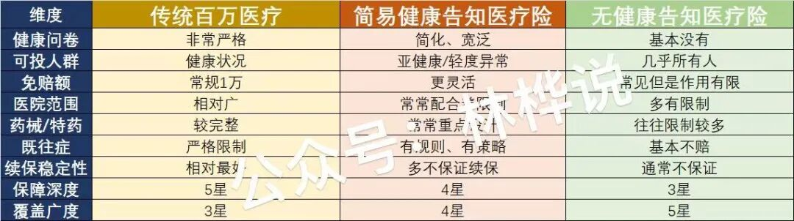
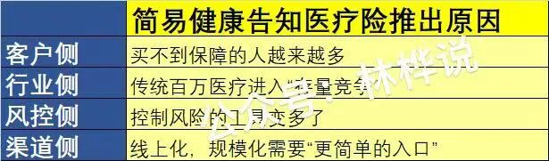
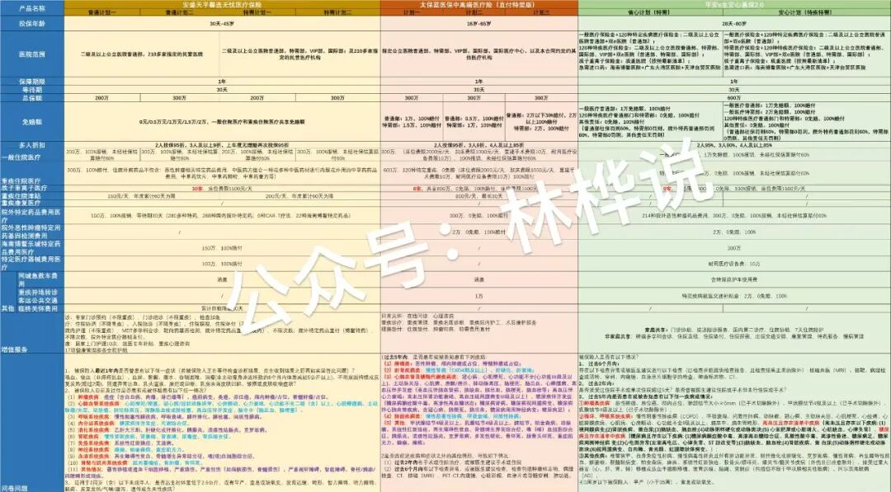
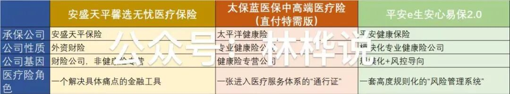
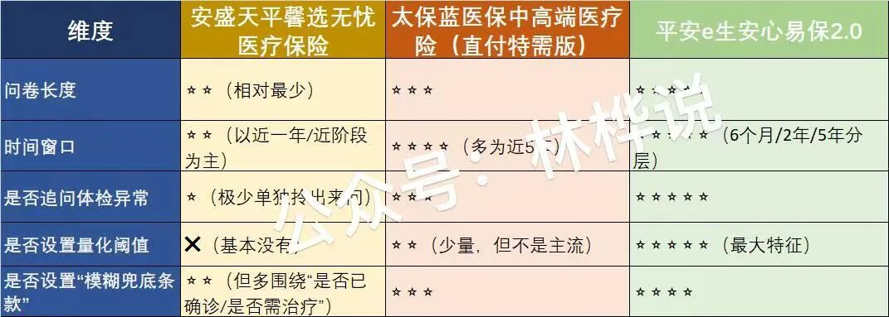
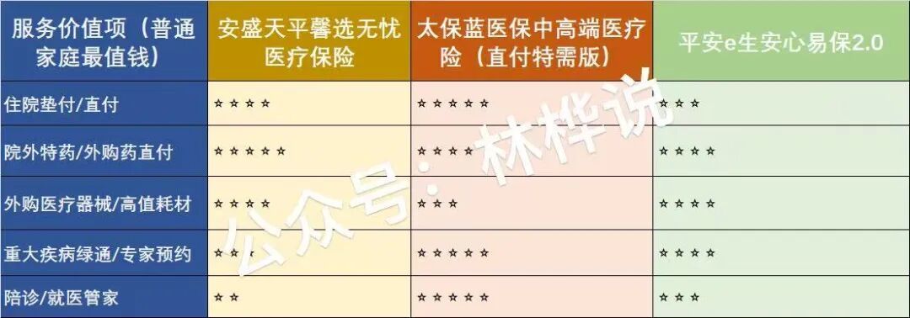

简易健康告知医疗险，到底是什么？为什么它正在成为普通家庭的“现实选择”？
这两年，很多人在咨询医疗险时，都会遇到一个共同的尴尬：
“我不是有大病，但是我的体检有点异常；我不是不想买保险，而是买不到。”
体检查出来有结节，一些指标偏高，自己曾经住过院，做过小手术……这些并不太严重的问题，却常常在传统的百万医疗险面前，直接被挡在门外。
在这样的大背景下，“简易健康告知的医疗险”，开始出现在市场上。但是问题也随之而来：
简易健康告知，是真的更友好，还是“放水”？
它和传统百万医疗到底差在哪里？
什么样的人才真正适合这类产品呢？
市面上不同公司的简易健康告知医疗险，逻辑为什么完全不同？
……
这篇文章，我不急着对比产品。而是先把这个“新物种”讲清楚。
第一部分 | 什么是简易健康告知医疗险？为啥推出这类产品？
我们知道市面上出现最早的是传统百万医疗产品，然后在这个基础上演化出了简易健康告知医疗险，还有无健康告知的医疗险，我们看看这三类医疗险的特点：

如上图所示，我把“简易健康告知医疗险”总结为：是用更少，更粗的问题放宽“入口”，再用免赔额、医院范围、药械清单，直付网络等方式，把风险控制在后端的一类商业医疗险产品。
它并不是没有健康告知，而是保险公司不再把所有风控压力，压在那几道问卷题上。它的风控还在，只不过是位置变了。
那保险公司为什么会集中推出这类产品呢？
这不是偶然，而是多重现实因素叠加的结果。我总结为4点：

首先，体检普及以后，“完全没有异常”的成年人，反而成了少数。大量普通家庭卡在一个尴尬区间：查出来有点小毛病，但也不算重病，但是也不再是“完美健康”了。
其次，健康、年轻、体况好的客户群体，早就被保险公司筛选了一轮又一轮了。保险公司要保费的增长，现在只能面对更真实的人群结构了，就是这群亚健康人群。
再次，保险公司过去只能靠“问得严不严”来进行风控，现在可以靠“免赔额，医院就医部门的限制，药品器械清单，直付网络，既往症策略，不保证续保的机制等等这些手段进行控制风险，风控部再是单一的一点，而是变成了一个系统工程。
最后，随着互联网的普及，各家公司的APP做得越来越智能化，客户更喜欢简单的入口，对复杂的问卷直接放弃，这就导致了保险公司不得不做出改变来匹配当下的客群。
所以，上面这4点的分析告诉我们，简易健康告知医疗险它不是放水，而是一种趋势。
第二部分 | 简易健康告知医疗险适合什么样的人群？
有3类人群比较适合：
第一类：体检异常/亚健康人群
体检出来了结节，个别指标偏高的，做过小手术，短期内有用药史……等等等等吧，这类人群在面对传统的百万医疗的时候，常常健康告知过不去，那就退而求其次，简易健康告知医疗险就是现实选择。
第二类：更在意“用起来顺不顺“的家庭
怕垫钱，怕跑流程，就是希望有人协助就医，那可好，简易健康告知医疗险往往配套更多直付与服务型的设计，专门解决你各种怕，让你没有后顾之忧。
第三类：最怕“药费，器械费“的家庭
身边有过住院经历，或者经历过大病理赔的客户们知道，真正让家庭资产承受很大压力的，往往不是住院费，而是比如遇到恶性肿瘤了，能不能用得起院外药，特药，还有极端情况下能不能支付得起一些比较昂贵的“器械“，这部分费用，不是一般的贵。
当然，如果你非常健康，你能轻松通过严格的健康告知，传统的百万医疗产品，未必不是你的更优解。还是要看个人不同的健康状况的。
第三部分 | 选简易健康告知医疗险产品前，最容易踩的5个雷区
（1）问卷宽，不等于后端松；
很多人最容易犯的错误就是“这款问卷很简单，我应该更容易赔吧！”这是个典型的误解。真相是啥？健康问卷只是风控的入口，不是风控的全部。当保险公司把问卷做“宽”，它一定会在其他地方把风险收回来，比如：更高更复杂的免赔额，给你限制医院部门，药品器械你得按照我这个清单上来才给你给付，对既往症我进行规则性处理，我也不保证续保等等。
说白了，问卷越宽，风控一定越往后移。
如果你不理解，你会踩什么坑？只看“能买”，忽略“怎么赔”，等到出险的时候才发现，不是不能赔，而是赔得很有限，并且流程很严格。
（2）保额高，不等于真能用；
很多人被600万/800万/1000万吸引，觉得额度高很安全。真相是啥？真正决定你能不能用的从来不是总的保额，而是：单项限制，触发的条件，使用的路径。
举个简单的例子：某产品的总保额是600万，其中院外药是100万，特药有清单，器械是单列限额的，同时住特需有免赔额。那么等你真用到的钱，可能根本不到600万。保额只是一个天花板，但是你真正能踩到的，是“地板在哪儿”。
（3）特需、直付，一定伴随规则；
你听过很多的介绍：可以去特需！支持直付！不用垫钱！那你一定要接着多问一句：在什么条件下？因为现实是，可以去特需不代表随便去任何特需，直付不等于所有的费用都直接结算的。 真相是，特需只限指定的医院指定的网络，不同的就医部门也对应不同的免赔额，还有直付之前，需要审核，测算，确认路径的。别忘了，特需和直付都是“高成本服务”，没有规则的话，就一定会失控。不了解这一点，也会踩坑。
（4）药械赔不赔，看清单与路径；
很多家庭成员认为，只要这个产品写了“外购药，特药”，就都能赔。实际情况是，药和器械，一定是被重点管理的风险。你要搞清楚，是不是清单内？是不是指定适应症？是不是走了约定的治疗路径？否则你要踩的坑点是：药是对的，病也是对的，但是不在清单，不符合路径，不给赔付，或者限制赔付。所以千万记得，要药械可不是写了就能赔，而是按照规则用才能赔。
（5）简易健康告知产品，几乎都不保证续保
简易健康告知医疗险产品，保证续保几乎是极少数的。大多数可以申请续保，或不保证续保。这也没有办法，因为这类产品的入口放宽了，承保人群健康状况更复杂，风险的波动更大些，对于保险公司来说，如果不给自己留“调整空间”，这类产品是很难长期活下去的。
所以这类产品，它更像一个阶段性解决方案，它算不得一买定终身得医疗险。作为普通老百姓，你先解决“现在能不能用”这个问题，再考虑“未来怎么衔接”这个问题吧。
总结一下：简易健康告知医疗险产品,它不是靠着“放松问卷“来对你好，而是它靠着一整套规则，在“你能买”和“它能活”之间找平衡。当你理解了上面所说的这5把尺子，你再去看具体的产品对比，你才能看懂“差异在哪里”，而不会只看见“价格和保额”了。
第四部分 | 市面上3款热销的产品，具体看一下它们之间的差异

如上图所示，我罗列了安盛天平馨选无忧医疗保险，太保蓝医保中高端医疗险（直付特需版），平安e生安心易保2.0这三款产品的不同维度详情对比表。
我会从公司层面，产品的健康问卷，条款与服务这3个维度进行拆解。
（1）公司层面的差异
医疗险不是一次性买卖，而是一门“长期运营的生意”。医疗险能不能赔，不只取决于条款写了什么，还取决于这家公司擅长不擅长，愿意不愿意，有没有能里长期把这件事做好。同样是简易健康告知医疗险产品，放在不同类型的公司体系里，它们的底层逻辑是完全不同的。

安盛天平：外资背景的财险公司，医疗险更像是“工具型产品”，强调药，器械，特药这些真实痛点的可用性，哪个地方最贵，最痛，就在哪个地方下重手。
太保健康：专业的健康险公司，核心能力在于直付网络，特需资源和管家式服务。它不是在问“你不能赔”，而是在管理“你会在哪里，怎么赔”。
平安健康：专业的健康险公司，强调了规模化运营与规则标准化，把复杂的风险拆成模块管理。它不是给你一个“随时协商的空间”，而是给你一套“按规则运行的系统”。
所以，关注“药，器械，特药这些硬成本风险”的家庭，可以多关注一下安盛天平；
关注“特需体验，直付，省心服务”的家庭，可能中意太保健康；
而“愿意按照规则来，追求责任清晰与体系稳定”的家庭，你可能对平安健康更感兴趣。
条款决定你“能不能赔”，公司决定你“好不好赔付，能不能一直赔付”。简易健康告知医疗险产品里，公司层面的差异，往往比条款差异更重要。
（2）健康问卷，差异在哪？
同样都是简易健康告知医疗险产品，谁更容易被卡？为什么？

如上图所示，我用了5个可量化的维度来拆解健康问卷这个环节，问卷越严格，相当于时间越长，追问越多，阈值越细，兜底越广。
我们具体看看这3款产品：
安盛天平馨选无忧医疗保险：它更多在问“有没有病”，很少问“指标是多少/结节多大/几级”，它对于“体检发现小问题，但是没诊断，没有治疗”的人容忍度最高。
太保蓝医保中高端医疗险（直付特需版）：它会问你：是否住院？是否手术？是否被医生要求复查/随诊？它不太执着于具体数值阈值，但是它更关心“你是不是潜在高频使用者”？本质上它在筛“未来会不会频繁使用特需/直付服务的人群。
平安e生安心易保2.0：它不只问“有没有“，而是问你：多久？是否检查？结果如何？是否复查？大量出现问这些：结节大小，分级，血压/血糖/血脂是否异常等，但凡你的体检报告“稍微花一点”，就容易被拦下来。这是“先把灰区掐死在入口”的典型的精算风格啊。
最后总结一下：
体检异常多，结节多，指标不好的人群，你先看安盛天平馨选无忧医疗这个产品；
想走特需/直付，但是最近几年身体还算稳定的客户，你可以重点关注太保蓝医保中高端医疗险（直付特需版）这款产品；
指标非常干净，愿意逐条对问卷的，你可以直接看看平安e生安心易保2.0啦。
（3）条款与服务的核心差异
真正拉开差距的，不是写了多少责任，而是下面这5件事：

住院垫付/直付，为啥排在第一优先级，因为从普通家庭的角度来看，最关注的肯定是“钱能不能先不从我口袋里出”这个问题。三个产品比，太保蓝医保中高端医疗险（直付特需版）是天花板；
院外特药/外购药直付，放在第二优先级，是因为这两类药，真用上的时候，最容易掏空普通家庭的现金流。三者相比，安盛天平馨选无忧医疗保险以它“院外特药直付，清单管理，博鳌特药，含CAR-T”属于用药路径的友好第一名，当之无愧；
第三优先级是外购医疗器械/高值耗材，这部分也是普通家庭最容易被忽视的坑。安盛天平馨选无忧医疗保险以“外购器械，耐用设备写得很明确，同时它和住院/特药衔接得很顺利”，所以它对“真实治疗路径”非常友好；同时平安e生安心易保2.0以它的“外购药，外购器械单列额度，风控逻辑清晰”脱颖而出，它就非常适合重度理性派的家庭；
第四优先级是重大疾病绿通/专家预约，对于普通家庭来说，时间就等于生存。太保蓝医保中高端医疗险（直付特需版）因为它里面的“专家预约，特需资源，陪同体系”的加持，不得不在中高端就医体验中获得第一名。
最后就是陪诊/就医管家了，太保蓝医保中高端医疗险（直付特需版）最是适合“子女没空/老人就医”的家庭了。
普通家庭选医疗险，不仅仅是看谁家条款写得高级，而是看：最贵的这5件事，谁帮你兜得最稳。
文章的最后，作为普通人的你，到底该怎么选？
这3款产品，不是“哪款更好”，而是：
怕药费的，你就看谁的药和器械更友好；
怕垫钱的，你就看谁的支付体验更强；
想特需的，你就看谁的网络与服务更成熟；
体检异常多的，你就先避开问卷最严的那些产品……
简易健康告知医疗险产品，不是为“完美健康的人”准备的，而是为“真实生活中的普通人”兜底的。
它不是最理想的选择，但往往是最现实，最能落地的那一个。
想链接林桦的，欢迎：

（免责声明：文中仅代表个人的一些分析，不构成任何的投保建议，投保前请仔细阅读产品条款并咨询专业人士。）
本文由 ShawnCH（何智翔）轉發，透過微信聊天記錄自動提取並整理。 原文連結：https://mp.weixin.qq.com/s?__biz=MzU4OTcwMjg0MQ==&mid=2247484798&idx=1&sn=7ac5623049a8d4ca0532582b891b98a9&chksm=fcbaa9d15da7e3f831e8f4ee836818618719a8a52201ca5f4a2e5ac3ddb61322b5c9001ebb7f&mpshare=1&scene=1&srcid=0126Lk81bE7Lhp8caEFPk8eD&sharer_shareinfo=b6b8214f92a6c3fd182f362500c30904&sharer_shareinfo_first=b6b8214f92a6c3fd182f362500c30904#rd